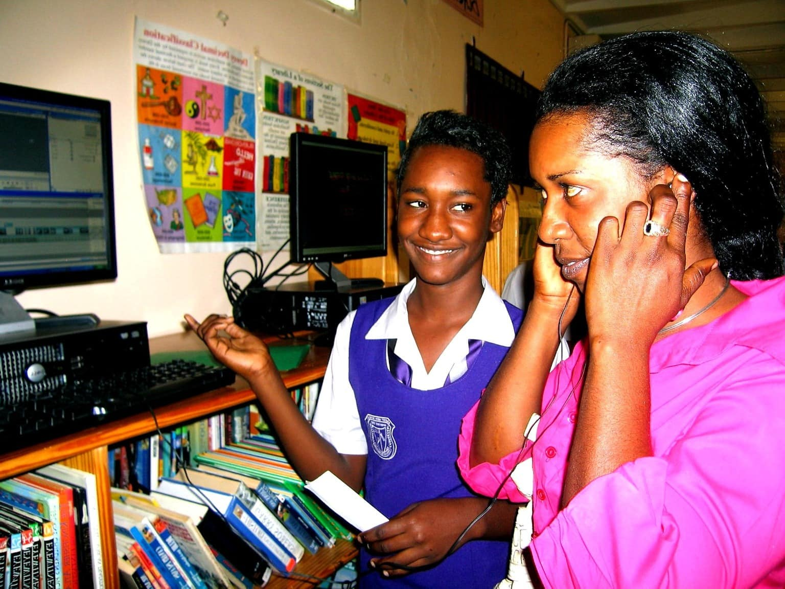

The Business Studies and Information Technology Department is committed to providing students with the knowledge, practical skills and guidance needed to excel in today's business and technology-driven world. Our dedicated team of educators works together to create a supportive learning environment where every student is encouraged to achieve their full potential.
Teacher of EDPM and Business Basics
Miss Lesa Michelin
Principles of Accounts & Business Basics
Information Technology & Business Basics
Information Technology & Administrative Assistant
Information Technology
Data Operations & Information Technology
Office Administration & Business Basics
Lab Technician
MOB, Entrepreneurship & POB